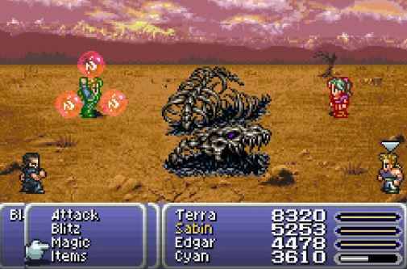

Final Fantasy VI

Fecha de lanzamiento: 2 de abril de 1994
Género: JRPG (Juego de Rol Japonés)
Desarrollador: Square (ahora Square Enix)
Copias vendidas: 3.48 millones
Sinopsis: En un mundo donde la magia ha desaparecido, un grupo de héroes debe enfrentarse al tirano Kefka y a su dominio. Este juego es recordado por su rica narrativa, complejos personajes y una inolvidable banda sonora.